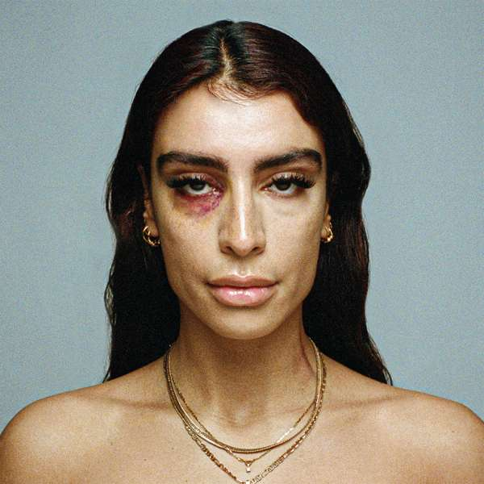
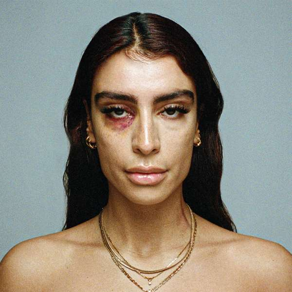

ABOUT FKA TWIGS
Tahliah Debrett Barnett (born 17 January 1988[7]), known professionally as FKA Twigs (stylized as FKA twigs), is an English singer, songwriter and dancer. Born and raised in Cheltenham, Gloucestershire, she became a backup dancer after moving to South London at age 17. She made her musical debut with the extended play EP1 (2012).
Her debut studio album, LP1, was released in 2014, and reached number 16 on the UK Albums Chart and number 30 on the US Billboard 200. It was later nominated for the 2014 Mercury Prize. She then released the M3LL155X EP in 2015. After a four year hiatus, she released her second studio album Magdalene in 2019. After signing with Atlantic Records, she released the mixtape Caprisongs in 2022. Her discography has been the subject of consistent critical acclaim, and her music has been described as "genre-bending",[8] drawing on various genres including electronic music, trip hop, R&B, and the avant-garde.
ABOUT SEVDALIZA
Sevda Alizadeh (Persian: سِودا علیزاده; born 1 September 1987), known professionally as Sevdaliza, is an Iranian-Dutch singer, songwriter, record producer, visual artist and director.[1] In 2015, she released two EPs, The Suspended Kid and Children of Silk. While her music is typically in English, she released her first Persian-language song "Bebin" in early 2017 in protest of Executive Order 13769. Her debut album, ISON, was released on 26 April 2017 via her record label, Twisted Elegance.[1] In 2018, she released a third EP The Calling, followed by her second studio album Shabrang in 2020.
ABOUT IVE
On November 2, 2021, Starship Entertainment announced that they would be debuting a new girl group, their first since WJSN in 2016.[6] The members were revealed from November 3 to 8 (in order: Yujin,[7] Gaeul,[8] Wonyoung,[9] Liz,[10] Rei,[11] and Leeseo).[12] On November 8, Starship confirmed that the group would debut on December 1,[13] followed two days later by the announcement of the title of the group's first single album as Eleven.[14] On December 1, the group released their debut single album, Eleven, led by the single of the same name. The group made their broadcast debut on KBS2's Music Bank on December 3, performing "Eleven".[15]
On the Billboard charts dated the week of December 14, 2021, "Eleven" ranked at number nine on the World Digital Song Sales chart and charted on the Billboard Global 200 and Billboard Global Excl. US charts for fourteen consecutive weeks.[16][17][18] The song also topped Billboard's Hot Trending Songs chart, debuting atop the Top User Generated Songs chart of Billboard Japan, and entered the Japan Hot 100 chart. Meanwhile, Ive charted on the Billboard Artist 100 for the first time.[19]
 
